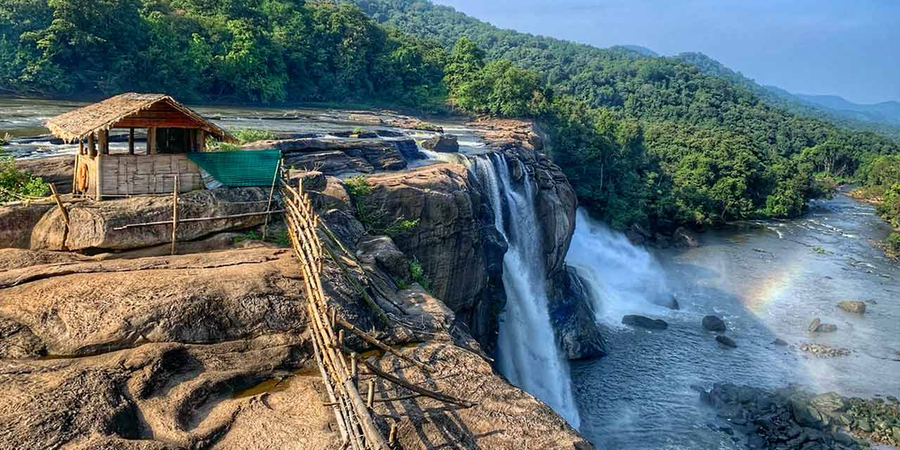
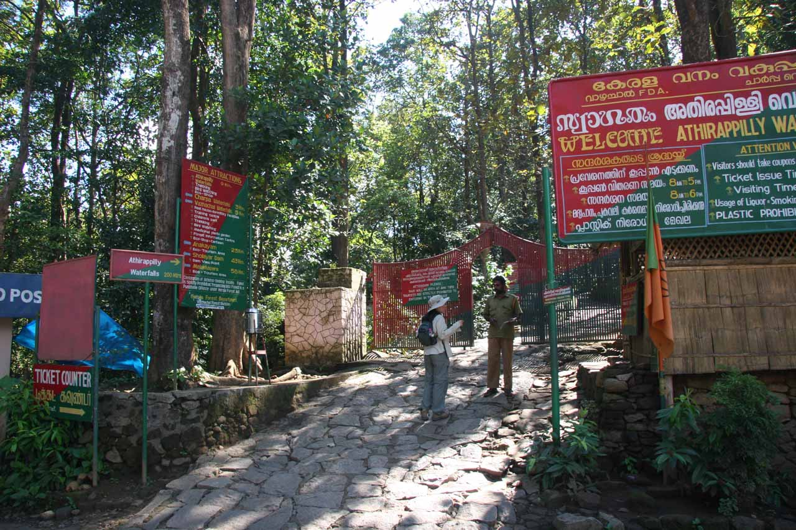
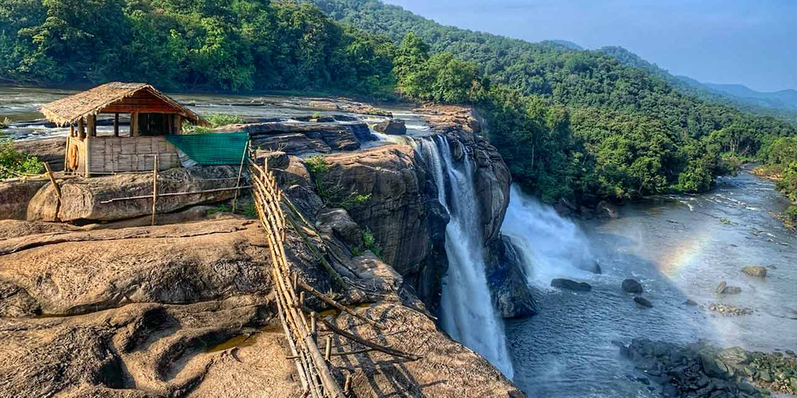
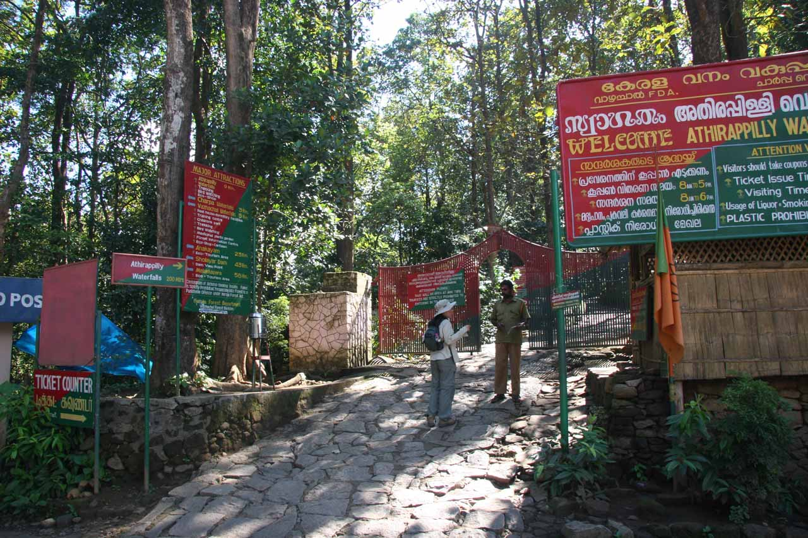

ATHIRAPPILLY WATERFALLS
Athirappilly Waterfalls is a mesmerising sight to the beholder. At 80 ft., it is the largest waterfall in Kerala and is also known as the Niagara of India (in case trivia interests you). Located in Thrissur’s Chalakudy district, the Chalakudy river flows towards Athirappilly from where it cascades down the enormous height to form the breathtaking view. The river has its origins in the Anamudi mountains of the Western Ghats, where the Sholayar ranges begin. It flows with increased force as it approaches Athirappilly where it then divides into three falls. Athirappilly has many specialties owing to its nature-endowed richness. Over the years, the falls have become a part of the backdrop for numerous movies. The monsoons are a time when the falls are most visited by tourists. The Vazhachal falls close by is also a favourite spot for picnickers. The dense forest is home to the Indian elephant, Indian leopard, Bengal tiger and many other species of animals. At an elevation of 50ft, the Athirappilly-Vazhachal riparian forest hosts all the four South Indian species of hornbill including the state bird, the Great Hornbill. It is an ‘Important Bird Area’ according to the International Bird Association while The Wildlife Trust of India calls it India’s best elephant conservation effort. The picturesque drive from Chalakudy to Athirappilly is a sign of what awaits at the falls, as the landscape covers several small villages and winding roads. The falls are especially a sight during the monsoons when visitors are greeted by a gentle mist of water rising from the falls.
 


